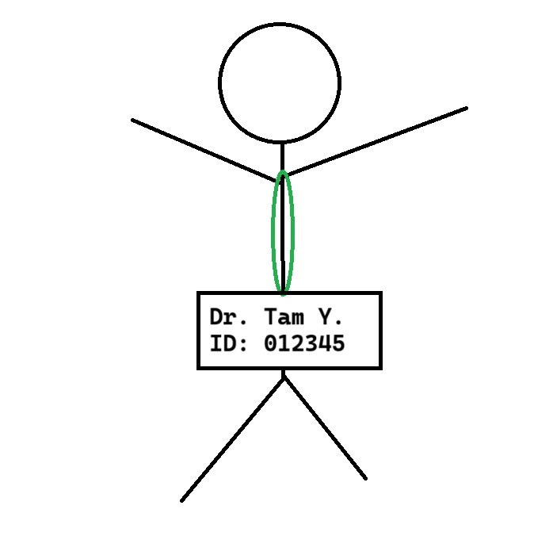
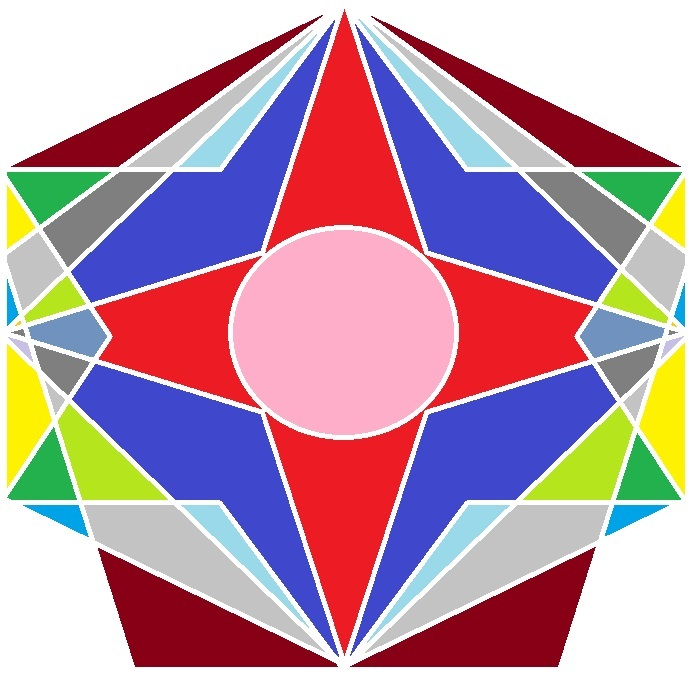

Artifact found, saftey protocols followed
Yesterday, in a suprising turn of events, an artifact was found by one of the LAB scienctists working between a nuclear reactor and a supercomputer. Tam Yesdnil, leading LAB saftey scientist and all around wizard, stated that he initially saw "a gelatinous flash of small light that tasted like a black hole sings". According to LAB officials, Tam immediately followed all safety protocols in assessing the item. Remember kids - Saftey First.
Scienctist Tam Yesdnil has spent four decades and two years at the LAB. The LAB is well know for being well known in the field of science. The LAB has been the leader of the field of research in fission, fusion, and fizzy drinks. Having grown up in the basement of the LAB, Tam left to university and earned two full ride scholarships for both good looks and dry humor. Often praised for having high ethical and procedural standards, Tam has led many safety initiatives at the LAB. The most famous project that Tam is known for is his saftey training that all new LAB employee's must watch, a delightful riff on the barely known TV show the Y-Papers.
Pictured: Dr. Tam Yesdnil, known person
The discovery occurred on the night of Saturday, May 31st. Follwing procedure, Tam reacted appropraitely to this strange phenomenon and immediately called site security for help. Reporting this as a possible issue, the area was immediately surrounded in caution tape. An notification was sent out to all lab employees about the issue. As a reminder - if you haven't signed up for notifications over text, you should do so now. Seriously - tornado season is here and if you are in this area as a intern then that might be the best way to get notifications. It won't hurt to take a minute and sign up for notifications right now. As we all know: safety is the number one priority in the lab's line of work.
Pictured: Drawing of the strange artifact
Lab Safety Procedures
The strange artifact came with no helpful manual